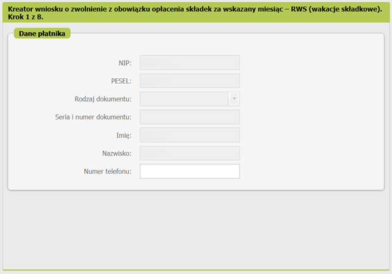

ZUS-КАНИКУЛЫ: Всё, что нужно знать предпринимателям Польши¶
Начиная с 1 ноября 2024 года индивидуальные предприниматели Польши (JDG) могут воспользоваться так называемыми «каникулами от ZUS» („Wakacje od ZUS”), то есть получить освобождение от оплаты социальных взносов („składki społeczne”) в течение одного месяца в году.
В первую очередь, новая льгота должна заинтересовать предпринимателей, которые оплачивают Duży ZUS. Если у вас ещё не закончилась Ulga na Start, то можете пока не вдаваться в детали и вернуться к теме позже.
Условия для предоставления ZUS-каникул¶
Чтобы получить освобождение, необходимо соответствовать следующим требованиям:
- В течение месяца, предшествующего месяцу подачи заявки, предприниматель должен быть хотя бы на 1 день застрахован в ZUS.
- За месяц, предшествующий месяцу подачи заявки, предприниматель должен оплатить те взносы, освобождение от которых он хочет получить. (т.е. не получится схитрить и сделать так, чтобы государство оплатило за вас добровольную składka chorobowa во время каникул, если вы сами её до этого не платили)
- Иметь не более 9 наёмных работников.
- Годовой оборот менее 2 млн. евро.
- Предприниматель не оказывал услуги бывшему работодателю, у которого в году регистрации предпринимательской деятельности и годом ранее работал на основании трудового договора (w ramach stosunku pracy) или другого контракта (spółdzielczego stosunku pracy), в той же сфере, к которой относится нынешняя деятельность ИП.
- Ещё не пользовался ZUS-каникулами в этом году.
Какие взносы можно не платить¶
ZUS-каникулы освобождают от уплаты социальных взносов:
- обязательные składki społeczne за себя: emerytalne, rentowe i wypadkowe;
- добровольное ubezpieczenie chorobowe;
- взносы в Fundusz Pracy и Fundusz Solidarnościowy.
По цифрам на каникулах от ZUS выходит то же самое, что на льготе „Ulga na Start”. Важно помнить, что взнос на медицинское страхование („składka zdrowotna”) предпринимателю придётся заплатить в любом случае.
Как подать заявку на ZUS-каникулы¶
Подать заявку можно только онлайн через портал PUE ZUS / eZUS. Оригинальная версия инструкции разработана Ольгой Корневой.
Создание документа¶
Входим в панель Płatnik (вверх, правая сторона), далее выбираем - Dokumenty i wiadomości (столбик слева) - Dokumenty robocze и внизу нажимаем Utwórz nowy.
Выбор RWS¶
На данном этапе, необходимо найти нужный нам внесек, для этого изначально увеличим количество документов на странице (внизу выбираем 50 или 100) и листая находим внесек либо листаем постранично и ищем: Wniosek RWS - Wniosek o zwolnienie z obowiązku opłacenia składek za wskazany miesiąc. Выбираем его и внизу нажимаем Utwórz dokument.

Выбор типа¶
Выбираем тип документа Wniosek.
На скриншоте выбрана первая из доступных 3 опций:
- Заявление
- Дополнение / исправление заявления
- Отзыв заявления
Для перехода на следующий экран нажимаем кнопку Dalej.
Личная информация¶
Заполняем информацию о JDG. Скорее всего уже будет заполнена, можно добавить номер телефона по желанию.

Выбор указанного месяца¶
Содержание запроса
Я ходатайствую об освобождении от уплаты взносов в фонд социального страхования и Трудовой Фонд и Фонд Солидарности за месяц:
Месяц 1 Год 2025
Если Вы не обязаны платить взносы в Фонд Труда и Фонд Солидарности за месяц, который Вы указали в своем заявлении, мы будем рассматривать Ваше заявление только в отношении освобождения от уплаты взносов на социальное страхование.
Указание использования помощи de minimis¶
ZUS-каникулы являются помощью de minimis, что означает, что предприниматель должен указать все государственные субсидии и льготы для предпринимателей, полученные в течение текущего года. Общий лимит помощи de minimis составляет 300 000 евро на три года.
Quote
Я заявляю, что:
- за последние два календарных года, предшествующих году подачи заявки, я не получил дохода от несельскохозяйственной экономической деятельности или, по крайней мере, за один год из двух последних календарных лет, предшествующих году подачи заявки, я получил годовой доход от несельскохозяйственной экономической деятельности, который не превышает эквивалент в злотых 2 миллионов евро;
- как застрахованный в календарном году, предшествующем году подачи заявления, и с начала календарного года, в котором я подаю заявление, до даты его подачи я не осуществлял несельскохозяйственную предпринимательскую деятельность бывшему работодателю, в пользу которого в календарном году начала предпринимательской деятельности или в предыдущем календарном году я выполнял в рамках трудовых или кооперативных трудовых отношений действия, входящие в сферу предпринимательской деятельности;
- За прошедшие 3 года:
- я не использовал государственную помощь de minimis
- я использовал общественную помощь de minimis Для подтверждения суммы полученной государственной помощи предоставляю:
- заявление
- сертификаты
 Перед отправкой заявки прикрепите сертификаты в качестве приложений.
Это можно будет сделать на последней странице креатора.
Перед отправкой заявки прикрепите сертификаты в качестве приложений.
Это можно будет сделать на последней странице креатора.
Я осознаю уголовную ответственность за подачу ложного заявления.
В примере указана отметка с использованием государственной помощи, а именно - использование каникул ZUS за предыдущий календарный год. Отметьте вариант, подходящий вам.
FAQ¶
Часто возникает вопрос у людей сомневающихся: "а вдруг получал помощь de minimis и просто не знаешь?"
Вы будете знать, если получали такую помощь: вся сумма должна строго учитываться, чтобы не превысить порог за три года, поэтому любой орган, оказывающий такую помощь, обязан выдавать справку об оказании помощи с конкретной датой и суммой. Кроме того, есть реестр предпринимателей, получивших помощь, где можно себя поискать. Нужно ввести NIP, нажать кнопку для выбора промежутка времени pełne 3 lata wstecz, отметить поле tylko de minimis и затем нажать Wyszukaj według wybranych kryteriów. Будет сгенерирован файл, в котором будут указаны все отдельно полученные льготы, а также их сумма.
"Где взять сертификат о получении помощи de minimis?"
В PUE ZUS, панель Platnik - Dokumenty i wiadomości - Skrzynka odbiorcza. В списке полученных документов нужно найти все актуальные документы с названием RWS - Informacja o przyznaniu zwolnienia. Для каждого из такого документов нужно зайти в Szczegóły.

На панели Szczegóły в разделе Załączniki нас интересует документ Zaświadczenie_rws-r-zasw.pdf. Чтобы скачать документ, нажмите Pobierz. Добавление документов описано в последнем шаге заполнения внеска.

Категории предпринимателей¶
Перевод содержания с разъяснением категорий
Перевод содержания
Размер субъекта
Размер организации в соответствии с приложением I к регламенту Комиссии (ЕС) № 651/2014 от 17 июня 2014 г., признающей определенные виды помощи соответствующими внутреннему рынку в соответствии со статьями 107 и 108 Трактата (НПА).
Микропредприниматель - считается предприниматель, который в течение как минимум одного года из двух последних финансовых лет выполнял в совокупности следующие условия:
- имел в среднем менее 10 сотрудников;
- достиг чистого годового оборота от продажи товаров, товаров и услуг, а также от финансовых операций, не превышающих эквивалента в злотых 2 млн. евро, или сумм активов его баланса, составленного на конец одного из этих лет, не превышало эквивалента в злотых 2 млн. евро.
Малый предприниматель - который в течение как минимум одного года из двух последних финансовых лет выполнял в совокупности следующие условия:
- имел в среднем менее 50 сотрудников;
- достиг чистого годового оборота от продажи товаров, изделий и услуг, а также финансовых операций, не превышающих эквивалента в злотых 10 млн. евро, или суммы активов его баланса, составленного на конец одного из этих лет, не превышали эквивалента в злотых 10 миллионов евро, и – не является микропредпринимателем.
Средний предприниматель - который, по крайней мере, в течение одного года из двух последних финансовых лет выполнял в совокупности следующие условия:
- имел в среднем менее 250 сотрудников;
- достиг чистого годового оборота от продажи товаров, товаров и услуг, а также финансовых операций, не превышающих эквивалента в злотых 50 миллионов евро, или суммы активов его баланса, составленного на конец одного из этих лет, не превышали эквивалента в злотых 43 миллионов евро, и – не является микропредпринимателем или малым предпринимателем.
Другой предприниматель - который не относится к вышеперечисленным категориям предпринимателей.
В примере указана отметка Микропредприниматель. Это единственный правильный ответ в том смысле, что, если у вас 10 и больше наёмных сотрудников, то каникулы от ZUS не предназначены для вас. Отметьте вариант, подходящий вам.
Класс деятельности¶
Перевод
Укажите PKD деятельности, в связи с которым подлежите социальному страхованию в Фонде Социального Страхования. Класс деятельности, в соответствии с постановлением Совета Министров от 18 декабря 2024 г. о польской классификации деятельности (PKD = аналог ОКВЭД) (Dz. U. z 2024 r. poz. 1936)
Во всплывающем окне выбирается соответствующий код деятельности.
В примере указан код деятельности 62.10.B (иная деятельность в рамках программирования). Отметьте вариант, подходящий вам.
Связи с другими предпринимателями¶
Перевод
Существует ли связь между субъектом и другими предпринимателями, заключающаяся в том, что:
- один предприниматель имеет большинство прав голоса акционеров или партнеров второго предпринимателя;
- один предприниматель имеет право назначить или отозвать большинство членов органа управляющего или контролирующего другого предпринимателя;
- один предприниматель имеет право оказывать доминирующее влияние на другого предпринимателя в соответствии с договором, заключенным с этим предпринимателем или в соответствии с его учредительными документами;
- один предприниматель, который является акционером или учредителем другого предпринимателя или его членом, в соответствии с соглашением с другими акционерами, акционерами или учредителями этого предпринимателя, самостоятельно контролирует большую часть прав голосов у этого предпринимателя;
- предприниматель остается в любом из отношений, описанных выше, через одного или нескольких других предпринимателей.
В примере все категории отмечены отрицательно. Если выбран хоть один ответ TAK, то придётся указать номера NIP других предпринимателей, а также размер помощи de minimis. Отметьте варианты, подходящие вам.
Информация о возникновении субъекта¶
Перевод
Субъект за прошедшие 3 года:
- возник в результате слияния других предпринимателей;
- принял/взял на себя другого предпринимателя;
- образовался в результате разделения другого предпринимателя;
- возник в результате трансформации предпринимателя.
В примере все категории отмечены отрицательно. Если выбран хоть один ответ TAK, то придётся указать номер NIP другого предпринимателя, а также размер помощи de minimis. Отметьте варианты, подходящие вам.
Информация про определенные категории деятельности¶
Перевод
Информация о предпринимательской деятельности, осуществляемой субъектом, которому должна быть оказана помощь de minimis
Осуществляет ли организация, которой должна быть оказана помощь de minimis, деятельность:
- в секторе основной продукции продуктов рыболовства и аквакультуры;
- в области основной продукции продуктов сельскохозяйственных, изложенных в приложении I к Трактату о функционировании ЕС;
- в области переработки и сбыта сельскохозяйственной продукции, указанной в приложении I к Трактату о функционировании ЕС;
- в области обработки и сбыта продуктов рыболовства и аквакультуры.
В примере все категории отмечены отрицательно. Отметьте варианты, подходящие вам.
Подпись и отправка¶
Если на шаге 3 вы выбрали пункт «korzystałem z pomocy publicznej de minimis» + пункт «zaświadczenia», то сейчас, на последнем шаге перед отправкой заявления, вам необходимо приложить справки (zaświadczenia) кнопкой «Dodaj załączniki...»
Подпишите и отправьте документ кнопкой Podpisz i wyślij.
Рекомендуется первый вариант "Podpis profilem PUE" как самый простой в использовании.
Критерий успешного выполнения¶
Вы получите такое сообщение:
А в отправленных документах (Dokumenty wysłane) появится Wniosek RWS:
Что дальше¶
Ожидайте ответа из ZUS в личном кабинете PUE/eZUS. Это может занять несколько дней. Уведомление о новых сообщениях вы получите на адрес электронной почты или номер телефона, указанные вами в PUE/eZUS.
Сначала вы получите Zawiadomienie o możliwości czynnego udziału w sprawie - это информационное письмо от ZUS о том, что ваше заявление принято к рассмотрению. После этого через несколько дней вы получите либо положительное, либо отрицательное решение об участии в каникулах ZUS. В случае положительного решения документ называется Informacja o przyznaniu zwolnienia. В примере показан случай положительного решения по заявке о каникулах.

Если вы не платите добровольную складку хоробову (которая для больничных) и подаётесь на каникулы, ZUS может на каком-то этапе прислать такое:
Zawiadomenie
Zakończyliśmy postępowanie w sprawie ustalenia prawa do zwolnienia z obowiązku opłacenia składek za czerwiec 2025 r., wszczętego na Pana wniosek z 29 maja 2025 r.
W wyniku weryfikacji stwierdziliśmy, że nie spełnia Pan następujących przesłanek ustawowych:
• nie podlegał Pan dobrowolnemu ubezpieczeniu chorobowemu w miesiącu złożenia wniosku albo w miesiącu go poprzedzającym
Może Pan wypowiedzieć się o zgromadzonej w Zakładzie dokumentacji w terminie 7 dni od daty doręczenia tego zawiadomienia.
Не стоит пугаться, это не означает полный отказ в предоставлении каникул, а лишь отказ в компенсации складки хоробовой. Через несколько дней после этого придут нормальные документы, касающиеся помощи.
В случае положительного решения нужно уведомить своего бухгалтера
Если же вы ведете бухгалтерию самостоятельно, смотрите пункт Ежемесячные отчеты во время ZUS-каникул.
Ежемесячные отчеты во время ZUS-каникул¶
Предприниматель должен подать следующие документы за себя:
- ZUS RCA 1: именной отчет социального страхования (składka na ubezpieczenie społeczne) с учётом каникул. В отчете нужно указать соответствующий Kod tytułu ubezpieczenia - 0514 для Duży ZUS, 0574 для Składki preferencyjne, 0594 для Mały ZUS Plus.
- ZUS RCA 2: именной отчет страхования здоровья (składka na ubezpieczenie zdrowotne) и при наличии включающий также добровольные больничные взносы (dobrowolne ubezpieczenie chorobowe) без учета каникул. В отчете нужно указать актуальный Kod tytułu ubezpieczenia - 0510 для Duży ZUS, 0570 для Składki preferencyjne, 0590 для Mały ZUS Plus.
- ZUS DRA: декларация по взносам с учётом каникул. В декларации в разделе оплаты за категории социального страхования (разделы Składki finansowane przez) значения должны быть указаны в полях budżet państwa вместо ubezpieczonych.
На наемных работников не распространяется льгота ZUS-каникул. Предприниматель в случае наличия наемных работников должен подать за них следующие документы:
- ZUS RCA: именной отчет без учета каникул.
Как сформировать отчеты для ZUS-каникул¶
Если вы пользуетесь программами бухгалтерского учета (Infakt, WFirma, iFirma), можно сформировать отчетность с их помощью. В ином случае, вы можете воспользоваться инструкцией ниже. Инструкция выполнена для плательщика на Składkach preferencyjnych. Оригинальная версия инструкции разработана Ольгой Корневой.
Креатор отчетов для ZUS-каникул в PUE ZUS¶
Панель ePłatnik – Kreatory – Obsługa rozliczenia - Dalej.
Nowy komplet rozliczeniowy - Dalej.
Поле даты будет заполнено заранее, сверяем остальные поля и нажимаем Dalej.
Выскочит информационное сообщение, что будут сгенерированы декларации ZUS RCA - нажимаем Zamknij.
На панели Rozliczenie ubezpieczonych нажимаем Dane rozliczenia.
На панели Dane rozliczenia выбираем элемент 057000 и нажимаем Edytuj.

На панели выбираем вторую вкладку Ubezpieczenie zdrowotne, wypłacone świadczenia.
Выбираем нужную форму налогообложения. Чтобы выбрать рычалт, нужно пролистать вкладку ниже.
Помимо отметки, для рычалта нужно указать сумму доходов за текущий календарный год (в примере - за 2024 год). Нажимаем Oblicz.
Выскочит информация про расчёт базы и взноса на медицинское страхование по предоставленным данным. Нажимаем Ok.
Соответственные поля заполнились автоматически. Нажимаем Zapisz.
Возвращаемся на панель Dane rozliczenia, нажимаем Dalej.

На панели Zestawenie нажимаем Dalej.
На панели Utworzenie i walidacja dokumentów нажимаем Wylicz.
Выскочит информационное сообщение. Нажимаем Ok.
На панели Utworzenie i walidacja dokumentów нажимаем Weryfikuj.
Декларации будут верифицированы.
Просмотр созданных деклараций¶
Для просмотра деклараций на панели Utworzenie i walidacja dokumentów выбираем нужный элемент и нажимаем Podgląd.
В одном элементе ZUS RCA будут сгенерированы две декларации ZUS RCA. Чтобы просмотреть обе декларации, используем кнопки навигации, указанные на скриншоте.
Часть взносов на социальное страхование (emerytalne, rentowe, chorobowe, wypadkowe), оплачиваемых государством, будет указана в декларации с кодом 057400. На скриншоте ниже это поля 15, 16, 17, 18.
Часть взносов на социальное страхование (emerytalne, rentowe, chorobowe, wypadkowe), оплачиваемых предпринимателем, будет указана в декларации с кодом 057000. На скриншоте ниже это поля 07, 08, 09, 10.
В декларации с кодом 057000 в соответственных полях будет указана база и размер взноса на медицинское страхование (składka zdrowotna). Раздел III.C поле 04 - столько должен заплатить застрахованный предприниматель. На скриншоте ниже указана сумма 699.11 zł, которая может отличаться в зависимости от вашей ситуации.
Отправка деклараций¶
На панели Utworzenie i walidacja dokumentów нажимаем Wyślij i zakończ.
Подписываем документ любым из перечисленных способов.
После подписи документ будет выслан в ZUS.
Вы ничего не теряете¶
Ваши взносы за этот месяц заплатит государство — на пенсионные накопления это никак не повлияет. В отличие от «паузы» (zawieszenie) или больничного, во время ZUS-каникул предприниматель может продолжать вести деятельность, направленную на получение дохода, и выставлять фактуры.
Заключение¶
ZUS-каникулы — это хорошая возможность немного снизить расходы на бизнес и облегчить себе жизнь. Просто не забудьте внимательно изучить условия и подать заявку вовремя.
Более подробную информацию о льготах можно найти на официальном сайте ZUS.